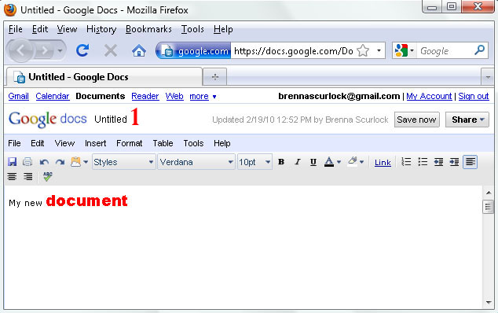

Part 2: Create a document using Google docs
Not only can you store any file type on Google docs, but you can also create text documents, presentations and spreadsheets.
1. Use this drop-down menu to select a new Google doc type
- Click "Create new" under the Google logo
- Select the doc type you wish to create
- "Document" will create a text doc
- "Presentation" will create a slide show
- "Spreadsheet" will create just that - a spreadsheet
- "Form" can be used to create a questionnaire to send via email
- For now, select "Document"
If you are familiar with word processors such as Microsoft Word, you will notice that your Google document follows a similar format. The available formatting options are those found on most word processors. With Google docs, you can:
1. Click this area to change the document name
- Format text and paragraphs
- Insert images, drawings, tables, links and comments
- Check spelling and translate text
- Use familiar keyboard shortcuts, such as ctrl+c for copy and ctrl+v for paste
- Type some text and experiment with the formatting options. If you have used a word processor before, you will likely find the Google word processor easy to navigate.
- After a while, your Google document will automatically save itself. To change the file name, click the document title (immediately to the right of the Google docs logo). A small pop-up will allow you to change the document name.
- When finished with your document, select "File" and "Save and close." Or simply close the document; it will save automatically.
***Closing the document will take you back to the main Google docs page. It may take a few moments for Google docs to refresh and show your new document.
You can create a form about anything... even yourself!
Something else you may find useful... Forms
In addition to creating text, presentation and spreadsheet documents, Google docs also allows you to create question forms to distribute via email or display on a website. Cool, huh?
To create a form, select "Form" from the "Create new" dropdown menu. A new page will open up: this is Google's form generator. All you have to do is enter your questions - Google takes care of all the rest! You can even pick an attractive theme for your form like I did. See the image below for a step-by-step process to create your own form.
- The first step is to name your form. Once you have a title, you can add a brief description in the box below the title.
- Next, you need to add your first question. Enter the question in "Question title." You can add a hint in "Help text."
- You need to select a question type. These are pretty self-explanatory: Text and Paragraph text will be text-input questions; Multiple choice and Choose from a list will give several answer options; Checkboxes will allow users to select multiple answers; Scale will allow users to choose from a scale of 1 to X; Grid allows you to group answer options.
- Click "Done" when you are finished with your question. You can always return later to make changes.
- When you are ready to add another question, select the question type from the "Add item" dropdown menu.
- When finished with your form, you can send it to others by clicking "Email form," or you can use the "More actions" dropdown and select "Embed." This will give you a code to embed your form on a web page.